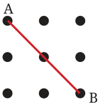
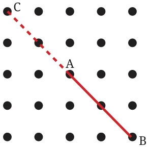
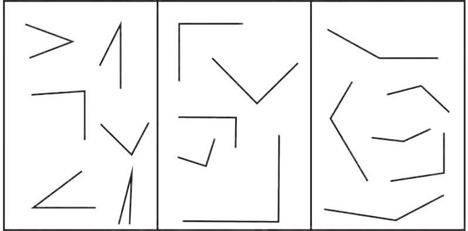

<!DOCTYPE html>
<html lang="en">
<head>
<meta charset="UTF-8">
<meta name="viewport" content="width=device-width,initial-scale=1">
<title>Figure it Out — Lines and Angles</title>
<meta name="description" content="Class 6 Mathematics · Lines and Angles · Figure it Out">
<link rel="icon" href="data:image/svg+xml,<svg xmlns='http://www.w3.org/2000/svg' viewBox='0 0 100 100'><text y='.9em' font-size='90'>📘</text></svg>">
<link rel="stylesheet" href="../../../assets/book.css">
<link rel="stylesheet" href="https://cdn.jsdelivr.net/npm/katex@0.16.11/dist/katex.min.css" crossorigin="anonymous">
</head>
<body>
<header class="topbar">
<div class="topbar-in">
  <div class="crumb">
    <span class="c1"><a href="../../../index.html">Library</a> · <a href="../../index.html">Class 6 Mathematics</a></span>
    <span class="c2">Lines and Angles · Figure it Out</span>
  </div>
  <a class="tb-btn" data-nav="prev" href="../../02-lines-and-angles/11-special-types-of-angles-2.8/index.html" title="2.8 Special Types of Angles">←</a>
  <details class="drawer"><summary class="tb-btn" title="Sections in this chapter">☰</summary>
<div class="drawer-panel"><div class="dh">Lines and Angles</div><a href="../01-chapter-opener/index.html">Chapter opener; 2.1 Point</a><a href="../02-line-segment-2.2/index.html">2.2 Line Segment</a><a href="../03-line-2.3/index.html">2.3 Line</a><a href="../04-ray-2.4/index.html">2.4 Ray</a><a href="../05-figure-it-out/index.html">Figure it Out</a><a href="../06-angle-d-2.5/index.html">2.5 Angle D</a><a href="../07-figure-it-out/index.html">Figure it Out</a><a href="../08-comparing-angles-2.6/index.html">2.6 Comparing Angles</a><a href="../09-figure-it-out/index.html">Figure it Out</a><a href="../10-making-rotating-arms-2.7/index.html">2.7 Making Rotating Arms</a><a href="../11-special-types-of-angles-2.8/index.html">2.8 Special Types of Angles</a><a href="../12-figure-it-out/index.html" aria-current="page">Figure it Out</a><a href="../13-figure-it-out/index.html">Figure it Out</a><a href="../14-measuring-angles-2.9/index.html">2.9 Measuring Angles</a><a href="../15-degree-measures-of-different-angles/index.html">Degree measures of different angles</a><a href="../16-unlabelled-protractor/index.html">Unlabelled protractor</a><a href="../17-figure-it-out/index.html">Figure it Out</a><a href="../18-labelled-protractor/index.html">Labelled protractor</a><a href="../19-figure-it-out/index.html">Figure it Out</a><a href="../20-figure-it-out/index.html">Figure it Out</a><a href="../21-drawing-angles-2.10/index.html">2.10 Drawing Angles</a><a href="../22-figure-it-out/index.html">Figure it Out</a><a href="../23-types-of-angles-and-their-measures-2.11/index.html">2.11 Types of Angles and their Measures</a><a href="../24-figure-it-out/index.html">Figure it Out</a><a href="../25-figure-it-out/index.html">Figure it Out</a><a href="../26-summary/index.html">Summary</a><a href="../27-solutions/index.html">CHAPTER 2 — SOLUTIONS</a></div></details>
  <a class="tb-btn" data-nav="next" href="../../02-lines-and-angles/13-figure-it-out/index.html" title="Figure it Out">→</a>
  <button class="tb-btn" data-theme-toggle title="Toggle light / dark" aria-label="Toggle light or dark theme">◐</button>
</div>
<div class="progress"><span style="width:13.4%"></span></div>
</header>
<main class="wrap">
<div class="sec-head">
  <p class="eyebrow"><a href="../index.html">Chapter 2 · Lines and Angles</a></p>
  <h1>Figure it Out</h1>
  <p class="sec-meta">Textbook pages 17–19 · 5 figures</p>
</div>
<article class="prose">
<ul class="qlist">
<li><span class="mk">1.</span><span class="lt">How many right angles do the windows of your classroom</span></li>
</ul>
<p>contain? Do you see other right angles in your classroom?</p>
<ul class="qlist">
<li><span class="mk">2.</span><span class="lt">Join A to other grid points in the figure by a straight line to get a</span></li>
</ul>
<p>straight angle. What are all the different ways of doing it?</p>
<figure class="fig side-fig"></figure>
<ul class="qlist">
<li><span class="mk">3.</span><span class="lt">Now join A to other grid points in the figure by a straight line to</span></li>
</ul>
<p>get a right angle. What are all the different ways of doing it?</p>
<figure class="fig side-fig"></figure>
<p>Hint: Extend the line further as shown in the figure below. To get a right angle at A, we need to draw a line through it that divides the straight angle CAB into two equal parts.</p>
<figure class="fig"></figure>
<ul class="qlist">
<li><span class="mk">4.</span><span class="lt">Get a slanting crease on the paper. Now, try to get another crease</span></li>
</ul>
<p>that is perpendicular to the slanting crease.</p>
<ul class="qlist">
<li><span class="mk">a.</span><span class="lt">How many right angles do you have now? Justify why the</span></li>
</ul>
<p>angles are exact right angles.</p>
<ul class="qlist">
<li><span class="mk">b.</span><span class="lt">Describe how you folded the paper so that any other person</span></li>
</ul>
<p>who doesn’t know the process can simply follow your description to get the right angle.</p>
<h3 id="s-classifying-angles">Classifying Angles</h3>
<p>Angles are classified in three groups as shown below. Right angles are shown in the second group. What could be the common feature of the other two groups?</p>
<figure class="fig wide"></figure>
<p>In the first group, all angles are less than a right angle or in other words, less than a quarter turn. Such angles are called acute angles. In the third group, all angles are greater than a right angle but less than a straight angle. The turning is more than a quarter turn and less than a half turn. Such angles are called obtuse angles.</p>
</article>
<nav class="pager"><a class="" data-nav="prev" href="../../02-lines-and-angles/11-special-types-of-angles-2.8/index.html"><span class="dir">← Previous</span><span class="t">2.8 Special Types of Angles</span><span class="ch">Lines and Angles</span></a><a class="nx" data-nav="next" href="../../02-lines-and-angles/13-figure-it-out/index.html"><span class="dir">Next →</span><span class="t">Figure it Out</span><span class="ch">Lines and Angles</span></a></nav>
</main><footer class="site">Generated from the source textbook PDFs · text, figures and exercises belong to their respective publishers.</footer><script defer src="https://cdn.jsdelivr.net/npm/katex@0.16.11/dist/katex.min.js" crossorigin="anonymous"></script>
<script defer src="https://cdn.jsdelivr.net/npm/katex@0.16.11/dist/contrib/auto-render.min.js" crossorigin="anonymous"
  onload="renderMathInElement(document.body,{delimiters:[
    {left:'\\(',right:'\\)',display:false},
    {left:'$$',right:'$$',display:true},
    {left:'\\[',right:'\\]',display:true}],throwOnError:false,ignoredTags:['script','noscript','style','textarea','pre','code']})"></script>
<script src="../../../assets/book.js"></script>
<script defer src="../../../../assets/search.js?v=1789782769"></script>
<script defer src="../../../../assets/screenshot.js?v=1789782769"></script>
</body>
</html>
